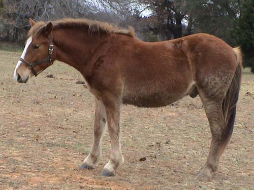
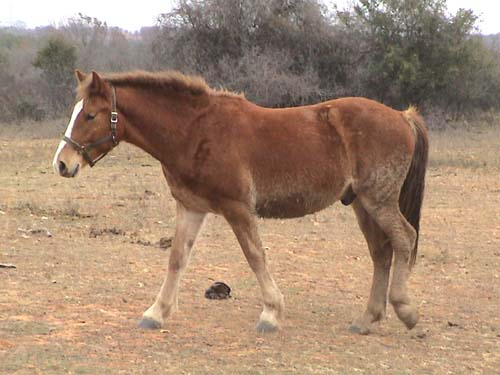
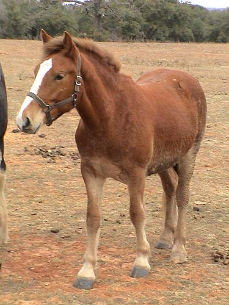
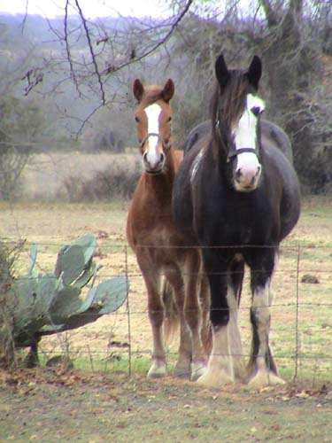
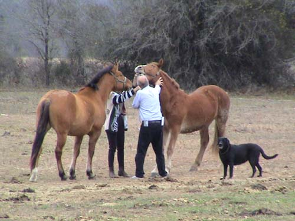

1/1/04
Thistle growing up

Almost 2, and his butt belongs to a different/taller horse...

In the past few months he's grown a couple of inches.

I think I've got a baby Belgian (there's no Welsh to be seen right now).

Well, next to Emma, anyone looks little. But, his knee joints are almost as tall as hers. Hopefully the Welsh genes will keep him under 16 hh.

We really weren't torturing him. Skye came over to help us give him his wormer. He calmed down once he realized the medicine didn't taste that bad...